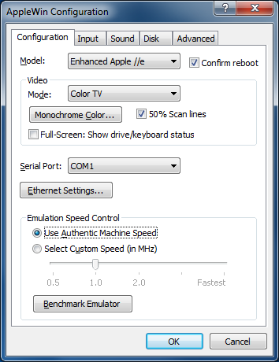

Configuration Settings
Computer:
This describes the mode of emulation. You have the option of emulating
the predecessors of the Apple //e: the Apple ][ and Apple ][+. Besides running
with a different Apple system ROM, some differences are discussed below.
-
Apple ][ : Non-autobooting, 64K machine, no lower-case, no 80-column, 6502 CPU
-
Apple ][+ : Autobooting version of the Apple ][
-
Apple //e : 128K machine, lower-case, 80-column, 6502 CPU
-
Enhanced Apple //e : 128K machine, lower-case, 80-column, 65C02 CPU
-
Clone (specific model selectable from Advanced page)
Video:
AppleWin can display Apple video in a variety of modes. The display can also be
run in a standard window or full-screen. This option describes the type of
video emulation to be used for the emulator. Some differences might be
discussed below.
-
Monochrome (custom) : This mode emulates a monochrome
monitor. You can choose your monochrome color from the Monochrome Color
button described below.
-
Monochrome (amber/green/white) : Monochrome with
specified color.
-
Color (standard) : This mode emulates a standard
color monitor.
-
Color (text optimized) : This mode does a bit of
image processing to make text more readable on the hires screen.
-
Color (TV emulation) : This mode emulates how colors
would bleed into one another on a TV. On the hires screen, alternating
horizontal lines of color are bled together to form new colors like grey,
purple, pink, yellow and aquamarine. This effect was used in commercial games
like Karateka and many hires adventures (eg. Mindshadow).
- 50% Scan line : Only draw alternate scanline (for better monitor
authenticity).
Serial Port:
This option will remap the emulated Apple's serial port to your PC's
serial port (or TCP port 1977). The Apple Super Serial Card (SSC) is emulated in slot-2.
The TCP interface to the Apple SSC can be used by the Apple // Game Server.
For details see the notes that comes with AGS:
Boot the Apple II to AppleSoft (ie. power on and hit Ctrl-Reset) and type IN#2.
From a Windows DOS box, start AGS with "localhost 1977 apple2e". This will boot the emulated Apple II from AGS.
Nb. Only Enhanced Apple //e is working at the moment.
Ethernet Settings...:
This allows to choose which network interface card (NIC) you want to
use with the Uthernet card.Monochrome Color:
This is the color to use when you choose a monochrome video mode.
Emulation Speed Control:
This option let's you control the processor speed of the emulated system. You
may choose to use an authentic speed (matching the speed of the original
processor from the system) or you can underclock or overclock the emulated
processor speed from half-speed to as fast as your PC can emulate.
Benchmark Emulator:
This will run a benchmark test that will show how fast your PC can emulate an
Apple //e system with this emulator. In order to run the benchmark, the
emulated machine must be reset and you will lose any unsaved work. You will be
prompted before you continue this action. The results given are:
-
Pure Video FPS
-
Pure CPU MHz
-
Expected average video game performance (in FPS)